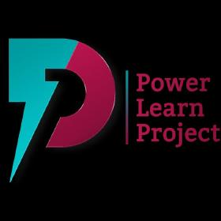

Open to data analyst opportunities
I turn raw data into decisions. I work across SQL, Excel, Power BI and Python to clean, analyze and visualize data. I focus on creating reports and visualizations for data-forward companies. I'm laser-focused on creating business insights that drive decision making, and i help companies automate reports that connect to all their data.
Tools I use to find, clean, and explain what data is saying.
Writing and optimizing queries — joins, aggregations, window functions and CTEs.
Pivot tables, lookups, and formula-driven models for fast, hands-on analysis.
Interactive dashboards and reports that turn raw datasets into a story anyone can act on.
Pandas and NumPy for cleaning and analysis, Matplotlib and Seaborn for visualization.
Version control for tracking, documenting, and sharing analysis and code.
Enough front-end to build and customize the pages that present my analysis.
A showcase of my recent data analysis work and technical projects.
Querying a retail sales database to uncover revenue trends and top-performing products.
An interactive dashboard tracking KPIs like revenue, growth and customer segments.
Cleaning a public dataset with Pandas and visualizing key patterns with Matplotlib and Seaborn.
Full write-ups and code will be linked here — and on GitHub — as each project ships.
What I can help you do with your data.
Extracting, cleaning and analyzing data with SQL, Excel and Python to answer specific business questions.
Building interactive Power BI dashboards and Excel reports that make metrics easy to track and act on.
Turning findings into clear charts and visuals using Python (Matplotlib, Seaborn) or Power BI.
Building responsive, accessible interfaces with HTML, CSS and JavaScript when a project needs one.

Power Learn Project (PLP) launched in 2021 to make tech training affordable and accessible for young people across Africa. In 2024, its fourth cohort welcomed 6,800 learners from 53 countries — a reflection of its growing reach and commitment to equipping African youth with skills for the digital economy.
Thank you for taking your time to visit my portfolio.
If you'd like to chat about me joining your team feel free to email me.